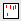

eddosy
NAME
eddosy - Edit DOSY processing parameters (2D, 3D)
DESCRIPTION
The command eddosy opens the following dialog box, if no DOSY parameters are available.
- Click OK to set the DOSY processing parameters.
These parameters are used by the command dosy2d and dosy3d on 2D and 3D data, respectively.
The following buttons are available:
Undo the last modification. Can be used repeatedly.
Switch to processing parameters.
Switch to Gifa parameters.
Copy parameters from experiment (AU program setdiffparm).
Get display limits from data set.
Execute Fourier Transform (command xf2).
 Start fitting.
 Search for the parameter specified in the search field.
Search for the parameter specified in the search field.
For more information on eddosy:
Click Help | Manuals | Acquisition Application Manuals | Dosy
INPUT FILES
<tshome>/exp/stan/nmr/form/
dosy.e - format file for eddosy
INPUT AND OUTPUT FILES
<dir>/data/<user>/nmr/<name>/<expno>/pdata/<procno>
dosy - DOSY processing parameters